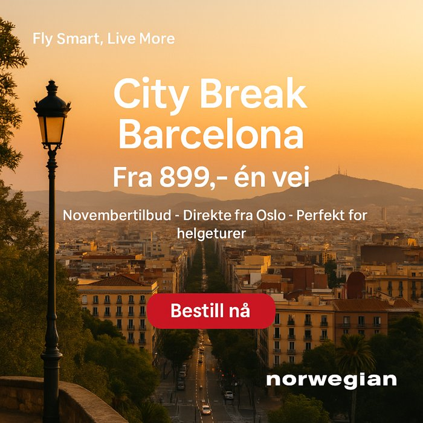
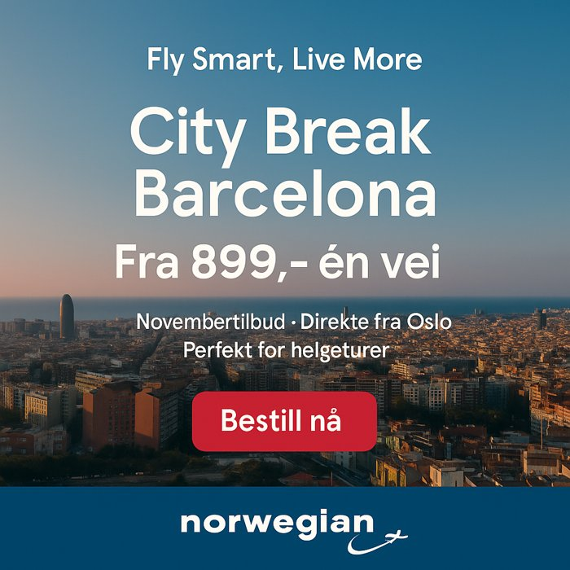
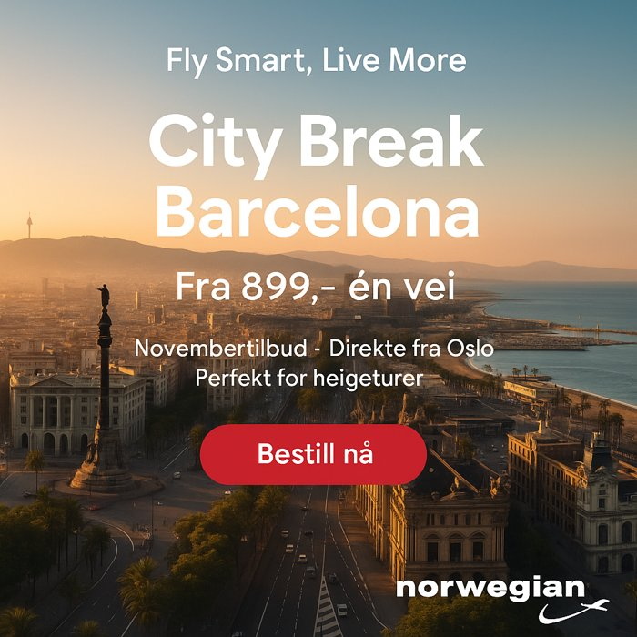
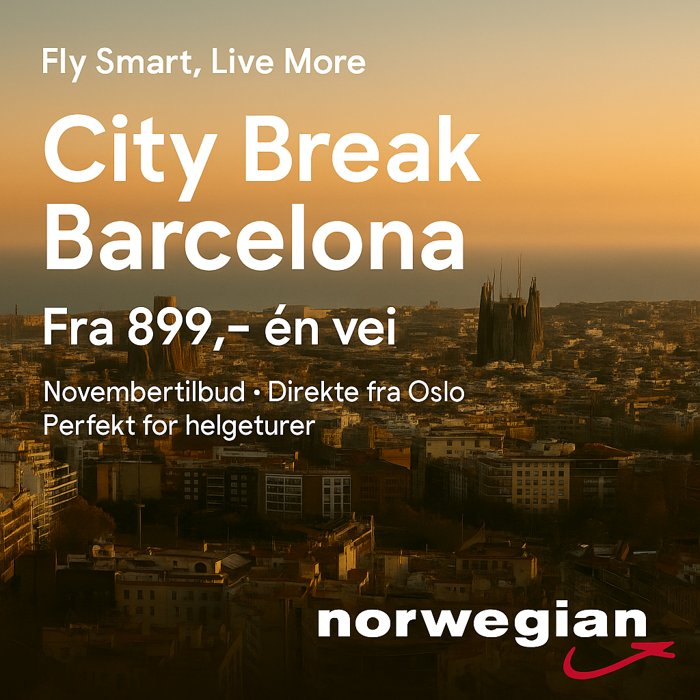
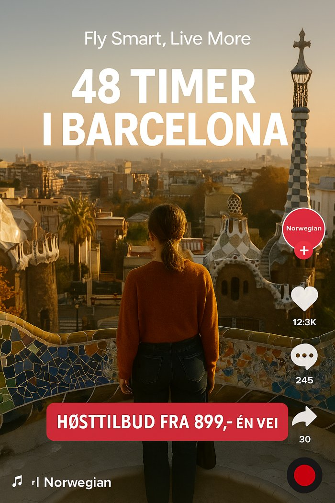
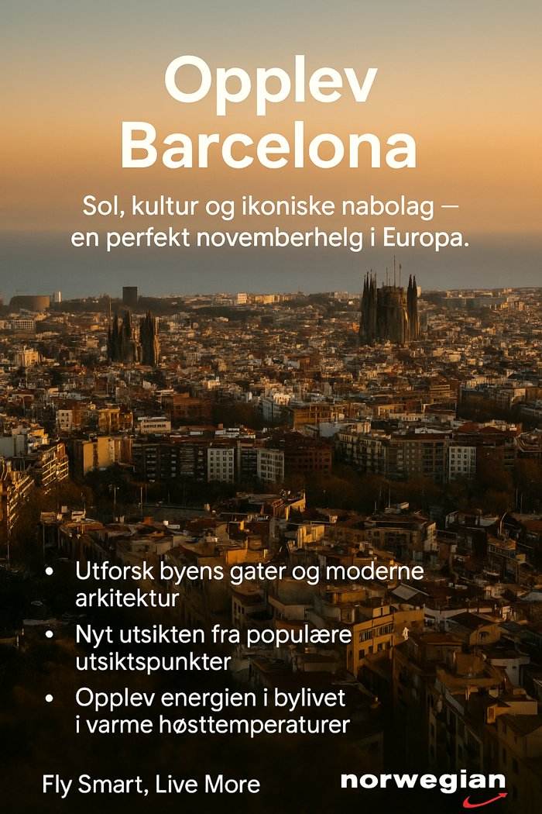
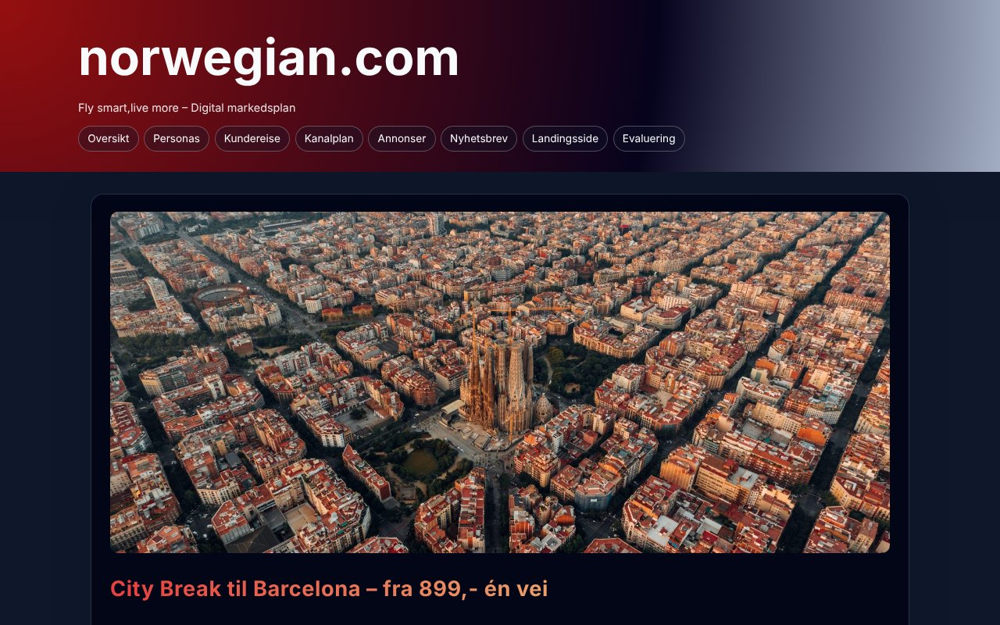

Two personas
- Sara, 22: student who wants a cheap, easy trip with friends. Reached through TikTok and Instagram.
- Ahmed, 27: newly employed, values direct flights and easy booking. Reached through Instagram and Google Display.
Digital marketing · Student project
A digital campaign plan for Norwegian Air Shuttle to sell more weekend trips to Barcelona to young adults, with ads for five channels, a newsletter, a landing page and a plan for measuring results.
Barcelona fits what young adults want from a weekend away: beach, city life, food and architecture in a short time. The campaign message was "Fly Smart, Live More", with prices from NOK 899 one way.
One visual style across all channels, with formats made for each phase of the journey. Google Display is used for retargeting people who have already shown interest.






Every ad leads to one landing page, the conversion point of the campaign. We also built a small website that presents the whole plan: personas, customer journey, channel plan, ads, newsletter and evaluation.

Student project. Not made for or approved by Norwegian Air Shuttle.